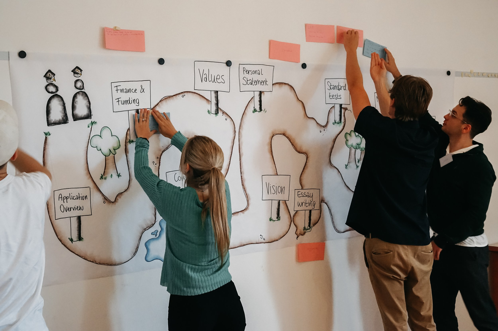
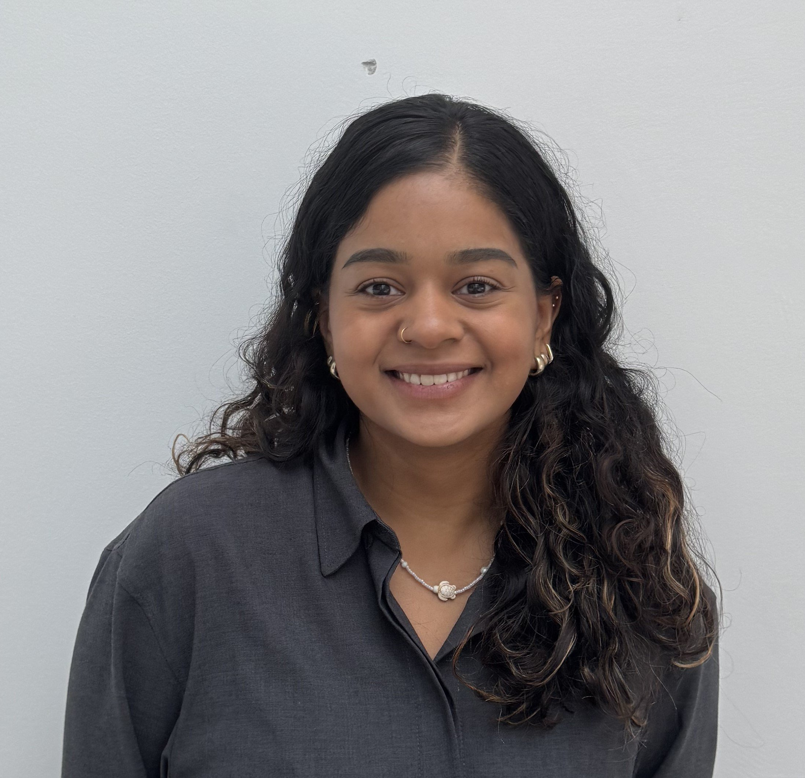
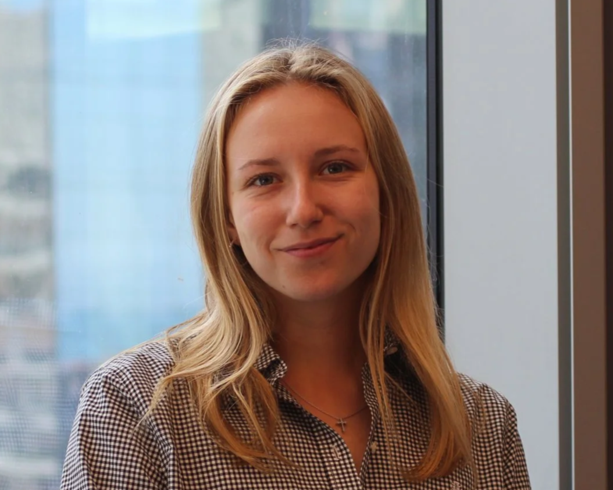

Project Access Austria
Dein Weg an internationale Top-Unis
Wir unterstützen Schüler:innen und Studierende aus Österreich und Südtirol kostenlos bei Bewerbungen an internationale Universitäten: mit 1:1-Mentoring, Bootcamp und ehrlichem Feedback von Menschen, die den Prozess selbst kennen.
Über Project Access
Mentoring von Menschen, die den Weg kennen.
Project Access ist eine internationale Non-Profit mit über 5.000 Mentor:innen weltweit. In Österreich bringen wir junge Menschen mit Studierenden und Alumni von Oxford, Cambridge, Harvard, ETH Zürich, Sciences Po, Bocconi und vielen weiteren Universitäten zusammen.
Programm
So unterstützen wir dich.
-
1:1 Mentoring
Eine persönliche Ansprechperson für Fragen, Feedback und nächste Schritte in deiner Bewerbung.
-
Bewerbungs-Bootcamp
Vier Tage für Studienwahl, Essays, Interviews, Finanzierung und Austausch mit anderen Bewerber:innen.
-
Kurse & Ressourcen
Klar erklärte Inhalte zu Studienwahl, Finanzierung, Essays und Interviews, vor und nach dem Bootcamp.
-
Community & Netzwerk
Kontakt zu anderen Bewerber:innen aus Österreich und Südtirol, die gerade vor ähnlichen Entscheidungen stehen.

Bootcamp 2026 · Anmeldung offen
Bootcamp 2026 in Horn.
Rund 40 Schüler:innen und Studierende arbeiten in kleinen Gruppen an ihren Bewerbungen. Dabei geht es um Studienwahl, Essays, Interviews und Finanzierung. Bewerbungen für Bachelor, Master und PhD sind willkommen.
- Datum
- 23.–26. Juli 2026
- Ort
- Horn, Niederösterreich
- Kosten
- Gratis, inklusive Unterkunft und Verpflegung
- Auswahl
- Vorrang für Bewerber:innen mit weniger Zugang zu privater Beratung
Mitmachen
Bei PA Austria mitmachen.
Mentor:in werden
Für Studierende und Alumni internationaler Universitäten.
Begleite Bewerber:innen mit deiner Erfahrung durch Essays, Interviews und Auswahlprozesse.
PA Austria Team
Bootcamp, Schulbesuche und Outreach mitgestalten.
Schulen
Schulpartnerschaften.
Sponsoring & Partnerschaft
Räume, Expertise oder Förderung beisteuern.
Unternehmen, Stiftungen und private Unterstützer:innen helfen, Bootcamp, Mentoring und Beratung kostenlos zu halten.
Partnerstimme
Talent sollte mehr zählen als Herkunft.
Wir bei McKinsey sind fest davon überzeugt, dass vielfältigere Teams bessere Ergebnisse erzielen. Es ist uns eine Freude, Project Access zu unterstützen, damit Talent und Leidenschaft den Bildungsweg bestimmen, nicht der sozioökonomische Hintergrund.
Möchten Sie Räume, Expertise oder Sponsoring beisteuern? Mehr zu Partnerschaften
Team
Das Team hinter PA Austria.

Diana
Leitung Master & Doktorat · LSE
Katrin
Leitung Schul- & Öffentlichkeitsarbeit · Oxford / Warwick
Yoan
Leitung Programme · WU Wien / QUT

Emmely
Soziale Medien · IMC FH Krems
Alle 16 ansehen
Zur Team-Seite →Aktuelle Updates
Aktuelle Termine.
Webinare, Schulbesuche und Bewerbungsfristen kündigen wir auf Instagram und per E-Mail an.
Events & Archiv ansehen →In den News
- Die Presse: Oxford, Cambridge und Co.: Top-Unis für alle
- Kurier: Trotz Corona und Brexit: Wie geht's nach Oxbridge?
- NÖN: Neue Herausforderung Unistudium im Ausland
- Der Standard: über Project Access
- Weltweite Stars: So klappt's mit dem Studium im Ausland
- MeinBezirk: BRG-Maturantin auf bestem Weg nach Großbritannien